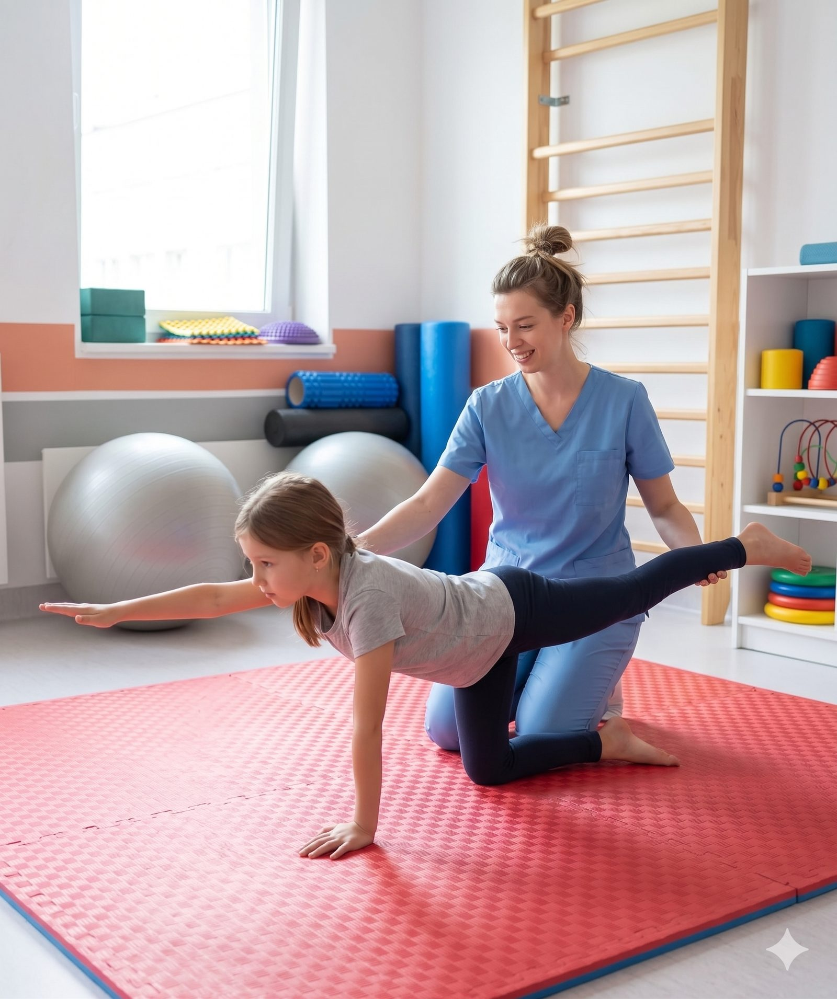
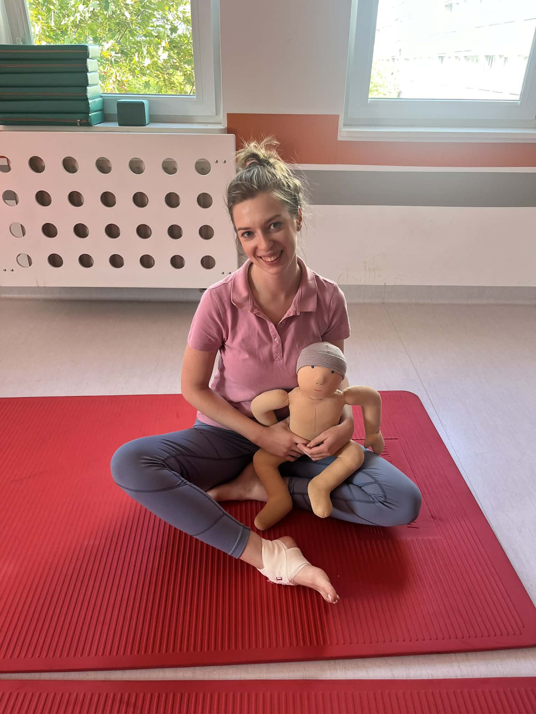
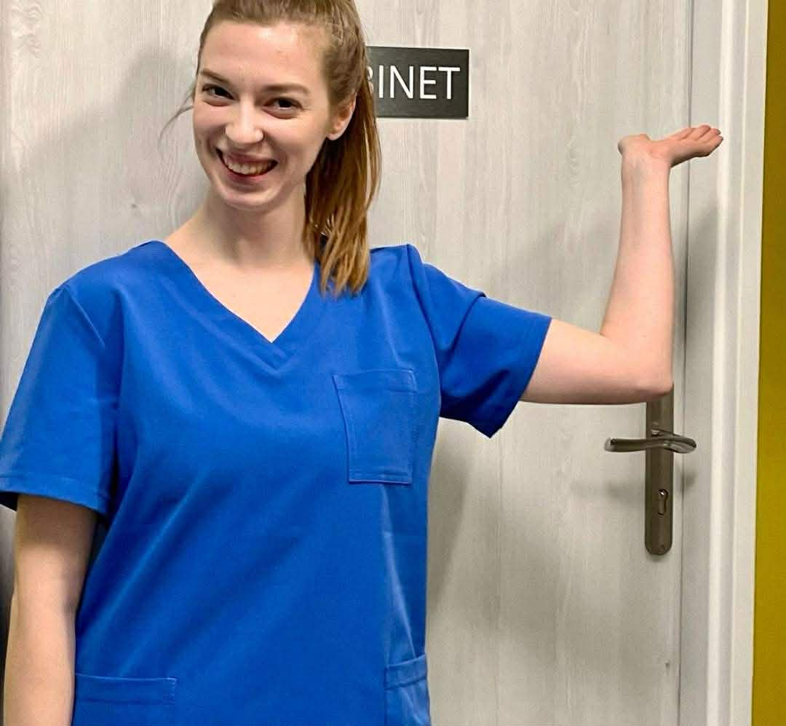
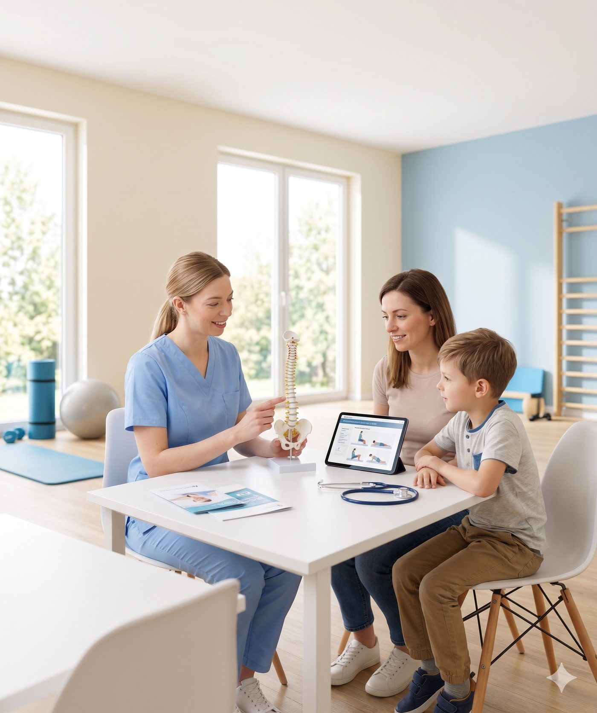
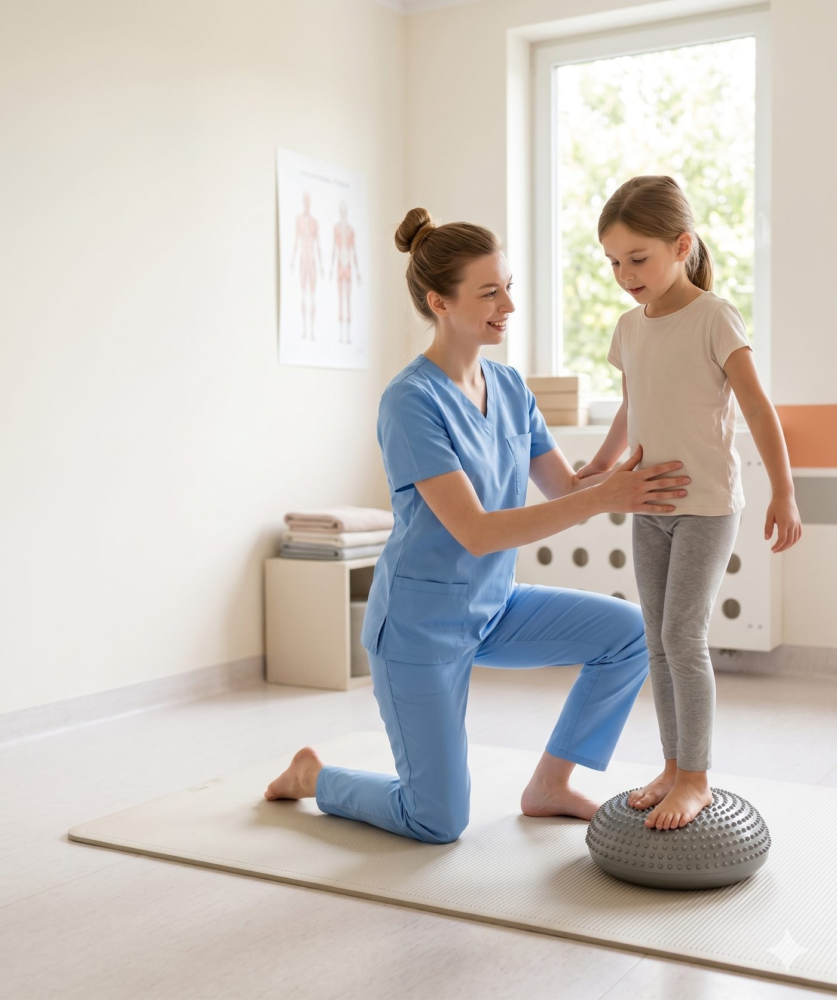
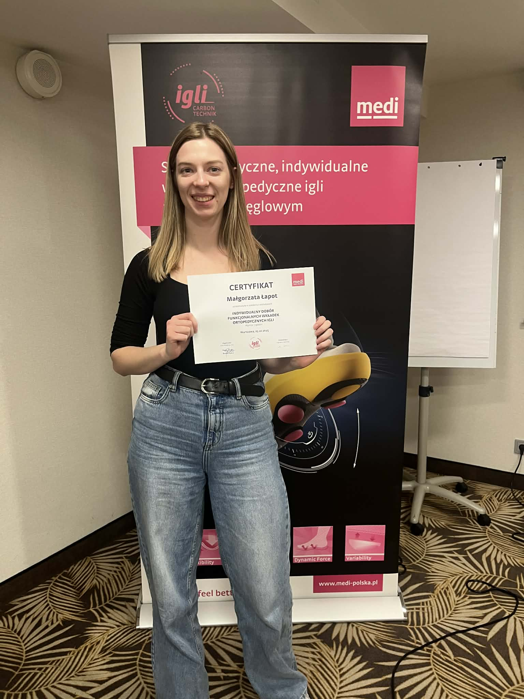

Pomagam mu mówić płynniej. Terapia 1:1 dopasowana do dziecka — nie odwrotnie. Wady postawy, skoliozy, zaburzenia neurorozwojowe, wcześniaki. Od 2. roku życia.



Nazywam się Małgorzata Łapot. Jestem absolwentką Warszawskiego Uniwersytetu Medycznego (Wydział Medyczny, kierunek Fizjoterapia). Tytuł magistra zdobyłam w 2022 roku — dwukrotnie z wyróżnieniem i stypendium rektora.
Zainteresowanie fizjoterapią pojawiło się już w liceum, gdy angażowałam się w wolontariat wśród osób z niepełnosprawnościami. Praktyki studenckie w Dziecięcym Szpitalu Klinicznym WUM utwierdziły mnie: moim powołaniem jest praca z dziećmi.
Od 2024 roku prowadzę własny gabinet. Równolegle dzielę się wiedzą jako asystent w Katedrze Sportów Indywidualnych AWF Warszawa. W terapii łączę elementy DNS, Vojty i Integracji Sensorycznej — zawsze z dogłębną diagnostyką i ścisłą współpracą z rodzicami.
Nie sprzedaję "pakietów". Każde dziecko ma inne ciało, inną historię, inny tydzień. Pracujemy po kolei — diagnostyka, plan, ruch, korekta.
Rozmowa z rodzicami, ocena wzorców ruchowych dziecka, testy funkcjonalne. Szukam przyczyny, nie objawu.
Dobieram metody (DNS, Vojta, SI, Zukunft-Huber) i konkretne ćwiczenia pod wiek, poziom i cel dziecka.
Dziecko trenuje przez grę. Pokonywanie toru, ćwiczenia z piłką, gra "w statuy", wymyślanie ruchów razem.
Rodzic dostaje 2–3 ćwiczenia do domu w formie filmu. Co 4–6 tygodni retest + modyfikacja planu.

Ćwiczenia fizjoterapeutyczne dla dziecka nie mogą być karą. W moim gabinecie to tor przeszkód, piłka, poduszka sensoryczna i dużo śmiechu. Efekt: dziecko chce wracać. Rodzice widzą zmianę.
Silny "gorset mięśniowy" = poprawna postawa całego ciała. Trenujemy mięśnie głębokie brzucha, grzbietu, przepony. Fundament dla każdego ruchu.
Czucie własnego ciała w przestrzeni — kluczowe u dzieci z wadami postawy, zaburzeniami neurorozwojowymi, płaskostopiem.
Świadome, precyzyjne ruchy. Rozpisujemy złożone wzorce (np. prawidłowy chód, wstawanie z ziemi) na składowe i trenujemy krok po kroku.
Dla dzieci po 3. r.ż. z nieprawidłowym chodem, asymetrią, "zaginaniem stopy do wewnątrz". Pracuję z całym łańcuchem: stopa → kolano → biodro → tułów.
Rozluźnienie napiętych pasm, praca nad zakresem ruchu w biodrach, barkach, kręgosłupie. Delikatnie, poprzez ruch, nigdy brutalnie.
Dla dzieci z ADHD, spektrum autyzmu, nadwrażliwością / niedowrażliwością dotyku, ruchu, równowagi. Elementy SI wplatam w całą sesję.

Nie białą salę i gabinet lekarski. Widzi plac zabaw z zadaniami — ale każdy ruch ma cel. Każda "gra" to konkretna pozycja, które trenuje daną grupę mięśni lub wzorzec neurologiczny.
Zakres, w którym czuję się w swoim żywiole. Diagnostyka, terapia, konsultacje — zarówno dla dzieci z jednostką chorobową, jak i profilaktycznie.
Plecy okrągłe, wklęsłe, asymetria barków/miednicy, koślawość kolan, płaskostopie.
Diagnostyka i terapia wg metod specyficznej fizjoterapii (m.in. FITS, Schroth-style elements).
Mózgowe Porażenie Dziecięce (MPD), niedowłady, zaburzenia napięcia mięśniowego.
ADHD, spektrum autyzmu — praca z ciałem wspiera regulację i koncentrację.
Zespół Downa i inne — dostosowane ćwiczenia wspierające rozwój motoryczny.
Koślawość, płaskostopie, stopa szpotawa. Terapia manualna Zukunft-Huber + wkładki Igli.
Asymetrie, opóźnienia motoryczne, wizyta patronażowa, wczesna interwencja.
Terapia SI — nadwrażliwość dotykowa, trudności z równowagą, poszukiwanie bodźców.
Konsultacje dla dzieci zdrowych — ocena rozwoju, wzorców chodu, jakości ruchu.
Nigdy jedna metoda na wszystko. Zawsze dopasowanie do dziecka, celu i reakcji organizmu.
Praca w oparciu o rozwój motoryczny niemowlęcia — przywracanie fizjologicznych wzorców ruchu. Szczególnie skuteczna przy wadach postawy, po urazach, u dzieci z zaburzonym napięciem.
Terapia poprzez stymulację układu przedsionkowego, proprioceptywnego i dotykowego. Efekt: lepsza regulacja emocji, koncentracja, koordynacja.
Trójpłaszczyznowa terapia manualna stóp u dzieci. Neurofizjologiczna podstawa — delikatna, precyzyjna praca na tkankach i stawach. Alternatywa/uzupełnienie gipsu czy ortez.
Dobór wkładek carbon-technik (Medi Polska) — wsparcie w terapii stóp, chodu, postawy. Dziecko dostaje wkładki idealnie dopasowane do jego ruchu.
Kurs "Diagnostyka i terapia skolioz idiopatycznych — przegląd metod" + aktywny udział w konferencjach Pro Scoliosis. Praca oparta na aktualnej wiedzy.
Elementy Vojty, praca z dziećmi z MPD, spastycznością, opóźnieniami motorycznymi. Ukończone kursy Fizja: niemowlęta / leczenie spastyczności.

10+ ukończonych kursów specjalistycznych, 2 konferencje ogólnopolskie, publikacje w trakcie. Fizjoterapia to zawód, w którym stagnacja = cofanie się.
Najlepiej napisz lub zadzwoń — odpowiadam na wiadomości w ciągu 24h w dni robocze. Podczas pierwszej rozmowy zadam kilka pytań o dziecko, umówimy dogodny termin i omówimy cel wizyty.
NIP: 1182278427 · Prawo wykonywania zawodu fizjoterapeuty: 75097